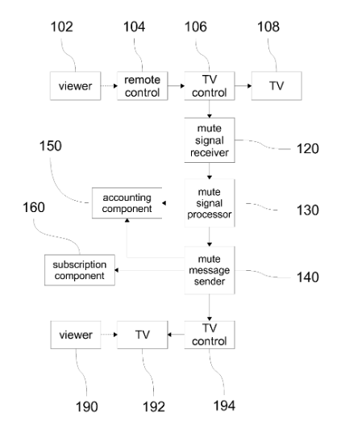
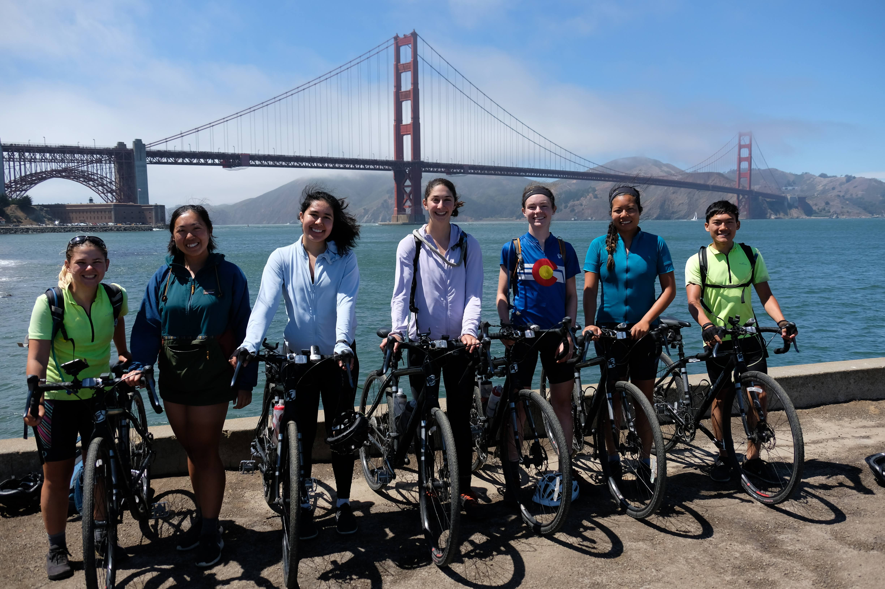

Here's some of the other stuff I've worked on!
Systems and Methods for Controlling Broadcast Audio Volume
In high school, I had an idea: what if your TV could be muted automatically? While there existed programs to evaluate changes in television volume and search closed captioning devices for "trigger words", no robust, easy-to-use system existed to mute a television automatically. Thus, MuteStreams was born.
The invention was an easy way for "subscribers" to have their televisions automatically muted by more vigilant users. These vigilant users would mute their televisions when a commercial came on. This "mute signal", interpreted by a device plugged into the set-top box and comprised of the mute instance and a program number, would be sent by TCP/IP protocol to a remote server, aggregated with other mute signals, and distributed across a network to the subscribers.
The project included many technical challenges: how are mute signals distributed? What makes a signal "good"? What happens when someone just mutes their TV to have a conversation with a friend? We had to examine every contingency in order to get an idea that would theoretically work. The project required hours of discussion and iteration.
In this way, subscribers could have their televisions automatically muted. Central to this invention was the concept of "mute credits", whereby vigilant users could earn "credits" for their mutes. They could then redeem these credits as subscribers to the program.
This past summer, I biked across the country, hosting workshops about science, technology, engineering, and math along the way. We stayed at 60+ homes, taught over 200 students, and raised a little under $30,000 to make this program happen.
The trip was a gigantic organizational challenge. We had to determine where we were going, what we would be doing, what we would be eating, how to get money, which bikes we would use, what equipment we would need, etc. My spring semester last year was occupied by these challenges, as I was in charge of fundraising the money to get us there. I wrote grant proposals, contacted advisors, friends, etc., and organized a crowdfunding campaign to get us across the country.
All in all, the trip was an excellent experience. I learned about myself (hills are hard), how I interact with others (group decisions are also hard), and how to accomplish things that need to get done, even if I don't really want to. I was constantly exhausted, eating over 3000 calories a day, and biking 70+ miles per day. We met so many fantastic people (including Greg, who is biking around the world), stayed in so many fantastic places, and ate so much fantastic food.
Now, I fix up old bikes at school (current project: an old Raleigh Marathon with barely functional parts that I will be converting to a single speed) and cycle for MIT Cycling. I think about a lot of problems while I'm on the bike, and I do truly enjoy the technical challenges of cycling long distances.